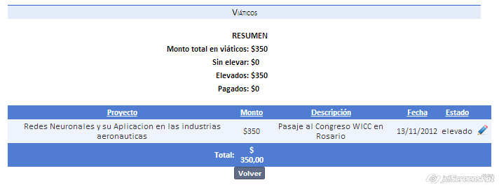

Podemos ver en esta pantalla los viáticos elevados por un investigador (elevados en la parte de gastos del perfil de proyecto).

Además de presentar el resumen, muestra el estado del mismo.
Dicho estado es solo para control del investigador, editando el estado podrá llevar un registro de los gastos elevados, sin elevar, y aquellos que han sido pagados .
Created with the Personal Edition of HelpNDoc: Free help authoring environment